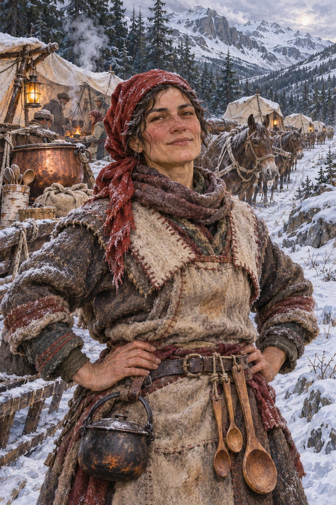

Дойти до зимовья, отработать у Явры дрова и еду, узнать о карнизе над Желобом и решить, кто идёт дальше.
Явра КестХерет ВаллБреша Кальт

Сельда НестГлафира ЛямкаТарма Вязь
Повороты сюжета в этот вечер
Посеять сегодня
Огонь на Отроге. Явра гладит косяк с зарубками: «Зарубка в палец за ночь. Так было в год, когда отец не вернулся». Карниз над Желобом нагружен сильнее, чем за десять зим.
Поворот: Огонь на Отроге
Кажется, что против того, что стоит на карнизе над Желобом, нет средства. На деле Явра Кест сорок зим назад видела, как Белая обрушила этот карниз на сани её отца, и видела, как пастухи жгли костёр на Отроге напротив — и Белая уходила с карниза. Путникам она не рассказывает: над ней смеялись.
Если Явре рассказать, что стаю гонят, или показать рисунок следов и мерку, она садится на порог и достаёт почерневшую бересту: «Она не прыгает сразу. Она ждёт, пока под ней будет больше». Рассказывает про отца и выносит два смоляных факела: «Огонь на Отроге она видит и не стоит. Пастухи так делали». Пусть стол сам решит, кому нести факелы. Без рассказа остаются только зарубки.
После него: У бега появляется второе знание: огонь на Отроге задержит Белую на карнизе на один ход, и сани успеют пройти Желоб. Без рассказа Явры этой строки на карте бега нет, и никто её не подскажет.
Поворот: Два дня ради тюка
Кажется, что буран первого дня — просто невезение, и обоз попал в него случайно. На деле Бреша Кальт задержала выход на два дня у Войлочного Двора, дожидаясь второго тюка шерсти у покупщика, хотя Херет говорил, что погода повернёт. Буран — цена этих двух дней, и Бреша знает это с первой ночи.
На подъёме к зимовью, когда при ней буран называют невезением или спрашивают, каких ночей не хватило, Бреша останавливается посреди колеи: «Два дня я ждала тюк. Два дня. Херет говорил. Пиши и это». Пусть стол сам решит, записать ли это на поле листа. Херет молчит и смотрит на гребень.
После него: Распорядительница больше не прячет свою вину за цифрами, и её слова «Зерно — это весна. Люди — это мы. Если придётся выбирать, я скажу первой» теперь звучат как обещание заплатить первой. Тюк шерсти становится тем, что не жалко бросить.
Из Чаш дорога лезет вверх между скал. Снег здесь глубже, мулы проваливаются по колено, постромки режут плечи тем, кто тянет рядом с ними, и каждые сто шагов обоз останавливается перевести дух. Стая идёт где-то сбоку по склону — видно только, как то тут, то там с камня осыпается снег.
К полудню над перегибом встаёт дым: впереди зимовье Шерстяная Стена. Отсюда видны только низкий сруб, загон и поленница, засыпанная снегом по самую крышу. Войлок на стенах внутри, говорят, расписан рисунками всех, кто здесь зимовал, а хозяйка каждое утро ставит на дверном косяке зарубку — сколько снега выпало за ночь. Подъём до него круче, чем кажется, но уже отсюда видно: на пороге кто-то стоит и смотрит не на обоз, а выше — на белый жёлоб под гребнем.
Подготовка и роли
Последняя ночь под крышей и последний шанс узнать про огонь на Отроге. Явра верит доказательству: рисунок следов из тетради Севара или мерка Кеи с замером — без броска; рассказ словами — Убеждение Сл 12. Если в вечер 5 стол понял, что стаю гонят, дай рассказу прозвучать. Рассказ открывает всю раздатку «Зарубки и береста Явры», факелы «Факелы Явры» и строку «огонь на Отроге» в рамке «Если знаете» на беге; без него выдай только первый абзац, и Отрога в беге нет. Явра не гонит людей в Желоб и не держит у себя силой. Лист: крыша Тепло +3; тюк шерсти Еда +3 (один, если есть); ночь под крышей Тепло 0 и паёк; «ящик в котёл» — только при Еде 0–2, в отметины. Пороги: при Еде 1–2 просит остаться первый из очереди ухода (Глафира, затем Вавила, затем Тарма); Тепло 0 сегодня не делает ночь холодной. Стая кружит у зимовья и к дыму печи не подходит; Белая видна только в концовке. Обычный итог после ночи: бережливый 6/8, средний 3/3, расточительный 3/3. Перерыв 15 минут между второй и третьей сценой.
Леврин Откос меняет у Явры тюк шерсти по пуговичному счёту и находит слова для того, кто просит остаться.
Севар Шест показывает Явре рисунок следов с линии отрыва и записывает в тетрадь её зарубки.
Ольма Вьюк ставит Сельду на смену у котла и решает паёк последней тёплой ночи.
Если за столом есть Эйра Брус, она сидит с тем, кто просит назад; если есть Юст Грань, он проверяет план Тармы. Без них эти дела берут другие.
Сцена 1 · 50 минут
Дым над зимовьем
До порога ещё сотня шагов, и это самые длинные шаги за день. Снег здесь по колено, полозья вязнут, и сани приходится толкать плечом, а мулы через каждые десять шагов встают и тяжело поводят боками. Дым зимовья стоит над перегибом, ровный и серый, и до него, кажется, можно дотянуться рукой. На подъёмах к Шерстяной Стене обозы говорят: кто видит дым, тот ещё не дошёл. По склону сбоку то и дело осыпается снег с камней, и мулы косятся туда, прижимая уши. Распорядительница идёт рядом с Меловыми санями, на ходу загибает пальцы, считая ночи, — и вдруг сбивается.
Пороги: прочтите лист вслух. Подъём из Чаш идёт по колено, полозья скрипят и вязнут, у кого постромка на плече, у того ресницы в инее. Стая кружит в отдалении по склону: цепочка вскачь, ни одной лёжки, к саням не ближе ста шагов. Если утром Еда 1–2, первый из очереди ухода догоняет голову обоза. Если это Глафира, она сначала говорит в сторону Дымки, потом громко и сразу: «Я мужу обещала. Если волки за нами — назад. Пусть хоть у Явры, до весны». Если Глафиры уже нет, просит Вавила. Бреша на ходу считает ночи на пальцах. Если при ней буран назовут невезением или спросят, каких ночей не хватило, она останавливается посреди колеи: «Два дня я ждала тюк. Два дня. Херет говорил. Пиши и это». Херет молчит и смотрит на гребень. Над перегибом — дым зимовья. Спросите стол: кто идёт рядом с просящим, кто говорит с Брешей, кто ведёт мулов последним.
Выборы — и что будет дальше
Отпустить просящего к Явре до весны: он жив и исход бега не меняет; берёт мешок (Еда −1, если есть).
Просящего отпускают к Явре до весны: он доходит до зимовья с обозом и остаётся там, живой. Исход бега он не меняет — его назовут у огня в конце. Он берёт мешок, если есть. Глафира, если это она, говорит громко и сразу: «Я мужу обещала. Если волки за нами — назад. Пусть хоть у Явры, до весны». И впервые за дорогу улыбается Дымке.
Удержать словом: Убеждение Сл 12.
Просящего удерживают словом — честно: что впереди, сколько осталось, кто без него не дойдёт. Если слова доходят, он кивает и идёт дальше, к Площадке. Если нет — просьба повторится, громче. Глафира, если это она, слушает в сторону Дымки, потом решается: «Ладно. Иду дальше. Только Дымку я веду сама, до конца». Удержанный человек — ещё одни руки в беге.
Удержать без броска: герой отдаёт свою долю (Слабость у героя на вечер) или — для Глафиры — слово Остапа.
Удерживают без уговоров: кто-то из отряда отдаёт свою долю пайка — и сам до вечера идёт на слабых ногах. Или, если просит Глафира и в буран её вела верёвка старшего по упряжи, хватает его слова: она верит ему с той ночи. Глафира кивает: «Ладно. Вы меня тогда нашли. Иду». Удержанный идёт дальше, отдавший долю — тоже, только медленнее.
Спросить Брешу, почему обоз вышел поздно, и записать её ответ на поле листа.
Бреша останавливается посреди колеи, когда её спрашивают, каких ночей не хватило: «Два дня я ждала тюк. Два дня. Херет говорил. Пиши и это». Буран первого дня — цена этих двух дней. Херет молчит и смотрит на гребень. Ответ записывают на поле листа, мелом. Бреша идёт дальше, не оглядываясь, но теперь все знают, за что она считает каждый мешок.
Проверка и путь без броска
Убеждение Сл 12: просящий идёт дальше; Глафира отвечает: «Хорошо. Иду. Но если ещё раз — я скажу». Без броска: герой отдаёт ему свою долю (у героя Слабость на вечер); Глафиру удерживает слово Остапа без броска, если в вечер 1 её вернули его верёвкой. Еда 0 «Пустой котёл»: Слабость у всех, и первый из очереди уходит, если утром в котёл не пошёл ящик семян (Еда +3, ящик в отметины).
Если не получилось
Если стол молчит, просящий у зимовья сам садится к печи и остаётся у Явры до весны: жив, исход бега не меняет; Еда −1, если есть.
Сцена 2 · 50 минут
Крыша и карниз
Вблизи у хозяйки зимовья широкие плечи, серебряные брови и фартук с карманом, набитым берестой. Дверной косяк за её спиной весь в зарубках, одна над другой, и самые верхние совсем свежие. Внутри видна большая печь, в которой еле теплится огонь, и войлок на стене, расписанный углём и охрой. Снег на крыше лежит шапкой в рост человека, поленница засыпана по самый верх. На Шерстяной Стене испокон за ночлег платят не деньгами, а работой, и хозяйка не спрашивает, кто вы такие. Она убирает нож в карман фартука и кивает на крышу. «Явра Кест, — говорит она. — У меня платят руками».
Явра Кест встречает обоз у порога и сразу ставит дело: «Крышу расчистить, поленницу сложить. Тогда и печь». Работа — Тепло +3, впишите в клетку. Если тюк шерсти ещё на санях, Явра берёт его: Еда +3. С крыши виден Белый Желоб: над ним карниз, как войлочный навес, тяжёлый, с синей тенью. Внизу у загона мулы трясут головами, с упряжи сыплется снег. Явра гладит косяк с зарубками: «Зарубка в палец за ночь. Так было в год, когда отец не вернулся». Тарма меряет зарубку от порога ладонью и коротко кашляет. Если Явре рассказать, что стаю гонят, или показать следы — рисунок Севара, мерку Кеи с замером, — она садится на порог и достаёт почерневшую бересту: «Она не прыгает сразу. Она ждёт, пока под ней будет больше». Потом рассказывает про отца и выносит два смоляных факела: «Огонь на Отроге она видит и не стоит. Пастухи так делали. Возьмите факелы». Пока работают, стая кружит по склону, к дыму печи не подходит.
Выборы — и что будет дальше
Расчистить крышу и сложить поленницу: Тепло +3.
Крышу зимовья расчищают лопатами, поленницу складывают ровно, как любит Явра. Три вязанки в лист — и печь до утра. С крыши виден Белый Желоб: над ним карниз, тяжёлый, как войлочный навес, с синей тенью. Явра гладит косяк с зарубками: «Зарубка в палец за ночь. Так было в год, когда отец не вернулся». Кто стоит на крыше, тот видит карниз дольше всех.
Обменять тюк шерсти, если он ещё есть: Еда +3 (по пуговичному счёту Леврина — без торга).
Тюк шерсти меняют у Явры на три мешка — меняла обоза ведёт пуговичный счёт, и Явра соглашается без торга: «Шерсть мне нужна, вам — мешки. Честно». Еды хватит на последний подъём. Шерсти в Лощину не довезут — или довезут меньше. Бреша смотрит, как тюк уносят в сени, и пишет на листе мелом: «Тюк один. Явре. Три мешка».
Показать Явре рисунок следов Севара или мерку Кеи с замером — без броска.
Явре показывают рисунок следов из тетради составителя схемы или мерку следопыта с замером. Она смотрит долго, потом садится на порог и достаёт почерневшую бересту: «Она не прыгает сразу. Она ждёт, пока под ней будет больше». Рассказывает про отца, про сани, про карниз над Желобом сорок зим назад. И выносит два смоляных факела: «Огонь на Отроге она видит и не стоит».
Рассказать Явре словами, что стаю гонят: Убеждение Сл 12.
Явре рассказывают словами, что стаю гонят: следы поверх следов, пустое логово, письмо Ошвена. Она слушает, не перебивая, и долго молчит. Если слова дошли, она садится на порог с берестой: «Надо мной смеялись. Сорок зим. А вы пришли и сами рассказали». Потом выносит факелы. Если не дошли — только зарубки, а про огонь на Отроге стол не узнает.
Проверка и путь без броска
Убеждение Сл 12 — Явра верит рассказу без доказательств. Без броска: рисунок следов из тетради Севара или мерка Кеи с замером в полторы ладони — верит сразу. Рассказ открывает всю раздатку «Зарубки и береста Явры» и факелы (два огня на бег вне листа); без рассказа выдаётся только первый абзац. Зарубки Явра показывает сама, без условий.
Если не получилось
Без рассказа Явра за ужином сама читает зарубки вслух: «Шумнёшь под ним — пойдёт». Про Белую и огонь на Отроге она молчит.
Сцена 3 · 50 минут
Последняя тёплая ночь
Печь в зимовье гудит, и от неё по всей избе идёт сухое, тяжёлое тепло. Иней на ресницах мулов в загоне под навесом тает и стекает каплями. На войлоке стен при свете печи видны рисунки прежних постояльцев: сани, мулы, человечки с шестами, чьи-то ладони, обведённые углём. Есть обычай: кто дошёл до Шерстяной Стены, оставляет на войлоке свой знак, чтобы следующие видели, что здесь проходили. Сельда раздаёт кашу из котла, ложка стучит по мискам. Тарма раскладывает на столе щепки, двигает их пальцем и хмурится. Явра сидит у окна с берестой на коленях и время от времени поднимает глаза на гребень.
Печь гудит, войлок на стене в рисунках прежних постояльцев, мулы в загоне под навесом, иней на их ресницах тает. Ночь под крышей: Тепло 0, спросите только о пайке. Сельда стучит ложкой по краю котла и раздаёт кашу: «Ешь. Я поела. Честно». Тарма раскладывает на столе щепки — сани, мулы, люди — и двигает их пальцем: «По Морене бегом, по Желобу шагом, хоть на руках неси. Сани — не люди. Сани бросают». План на подъём к Последней Площадке: что везти наверх, кого посадить на мулов и на нарту, кто тянет в постромках, кто несёт обмороженных. Бреша мелом заново подписывает ящики. Херет сушит у печи чехол шеста и молчит, пока его не спросят о подъёме. Явра сидит у окна с берестой и время от времени смотрит на гребень. Не торопите стол: за стеной не ветер, а печь. Слово сначала тем, кто сегодня ещё не говорил.
Выборы — и что будет дальше
Решить, что везти через Желоб — ящики, тюк, котёл — и что оставить у Явры до весны.
За столом у печи решают, что везти через Желоб: ящики, тюк, котёл. Оставленное у Явры сохранится до весны, но в Лощину не дойдёт. Тарма двигает щепки пальцем: «По Морене бегом, по Желобу шагом, хоть на руках неси». Каждый лишний ящик — шаг медленнее под карнизом. Бреша мелом заново подписывает ящики и смотрит на номера, будто на имена.
Решить, кто едет на мулах и нарте, а кто тянет в постромках.
Решают, кто едет на мулах и на нарте Малкена, а кто встаёт в постромки. Обмороженные едут — их нужно везти. Здоровые тянут. На муле вьюком два места, в санях четыре, нарта везёт одного. Тарма раскладывает щепки: сани, мулы, люди. Малкен трогает лямки нарты: «Нарта — она как лодка: вдвоём тянешь, один едет». Каждый получает своё место на завтра.
Поставить Сельду на конкретную смену у котла — тогда она признаётся, что ест полпорции.
Сельду ставят на конкретную смену у котла — не спрашивают при всех, а называют её час и её миску. Она долго мешает кашу, потом опускает ложку: «Я с первой ночи ем полпорции. Возчикам нужнее». Это не болезнь, а голод и усталость. Теперь её долю считают вслух, как и все остальные. Сельда краснеет и впервые за дорогу ест полную миску.
Паёк: полный (Еда −2) или полпайка (Еда −1, отметина «П», завтра Слабость).
Под крышей тепло не тратится, остаётся паёк. Полный — два мешка, и завтра на последний подъём все выйдут сытыми. Полпайка — один, и подъём будет тяжелее. Явра сидит у окна с берестой и иногда смотрит на гребень. Сельда раздаёт кашу: «Ешь. Я поела. Честно». В полночь по гребню над Желобом при луне идёт белая волчица ростом с пони.
Проверка и путь без броска
Выживание Сл 12: по зарубкам Явры карниз утром держит дольше, к полудню каплет — подробность для плана выхода. Без броска: Явра говорит это сама, если её спросить. Ночь по листу: паёк −2 или −1, Тепло 0 под крышей.
Если не получилось
Если план не сложился, Тарма предлагает свой: сани остаются у Явры, всё — на мулах. Стол соглашается или поправляет за минуту.
Зарубки Явры
На дверном косяке зимовья — зарубки с датами, по одной на ночь снегопада. Рядом на гвозде береста с записями; одна берестяная полоса старая, почерневшая.
Что можно установить
Карниз над Белым Желобом нагружен сильнее, чем за десять зим. В белые зимы Белая ломает карнизы, выходя на них своим весом; огонь на Отроге напротив карниза её держит.
Получение
Вечер 6, сцена 2: спросить Явру о снеге — она показывает зарубки сама, без броска. Рассказ о Белой и «Зарубки и береста Явры» целиком — если Явре рассказали про загнанную стаю или показали следы (рисунок Севара, мерка Кеи — без броска; рассказом — Убеждение Сл 12).
Запасной путь
Без рассказа Явра за ужином сама читает зарубки вслух: «Шумнёшь под ним — пойдёт». Тарма меряет зарубку от порога. Про огонь на Отроге стол тогда не узнаёт, и в беге этого дела нет.
Изменения после решений
Если Явре рассказали, что стаю гонят, или показали следы Белой → Два факела Явры — два огня на бег вне листа; вся раздатка «Зарубки и береста Явры»; стол знает, что огонь на Отроге держит Белую: в беге ведущий открывает эту строку рамки «Если знаете».
Если Явре не рассказали и следов не показали → Только зарубки: про огонь на Отроге стол не знает, и в беге ведущий эту строку рамки «Если знаете» не даёт. Её никто не подскажет.
Если Глафира (или другой просящий) осталась у Явры → Жива до весны у зимовья; исход бега не меняет — её называют у огня в конце.
Выдать в нужный момент
Зарубки и береста Явры — Вечер 6, сцена 2: целиком — после рассказа Явры о Белой (ей рассказали про загнанную стаю или показали следы: рисунок Севара, мерка Кеи). Без её рассказа выдаётся только первый абзац (зарубки).
Завершение вечера
Печь в зимовье гудит до полуночи, войлок на стене отогрелся и пахнет овчиной. В полночь Явра стоит у окна. По гребню над Желобом при луне идёт белая волчица ростом с пони — шагом, к перевалу; под ней не осыпается ни один камень. Явра не оборачивается: «Домой идёт. Перед вами». Назовите итог листа и отметьте, кто из обоза остаётся у Явры до весны, а кто идёт дальше. Утром — последний подъём, к Последней Площадке под Мореной.